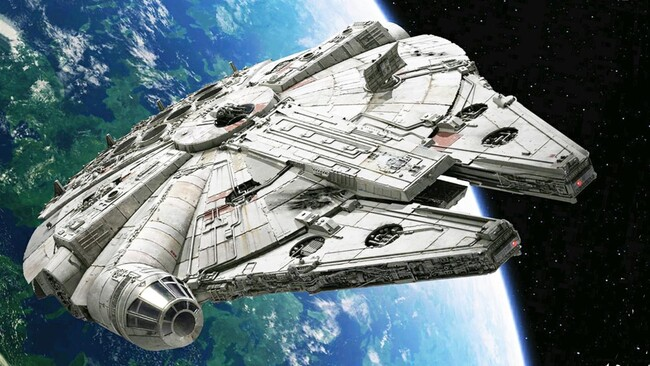
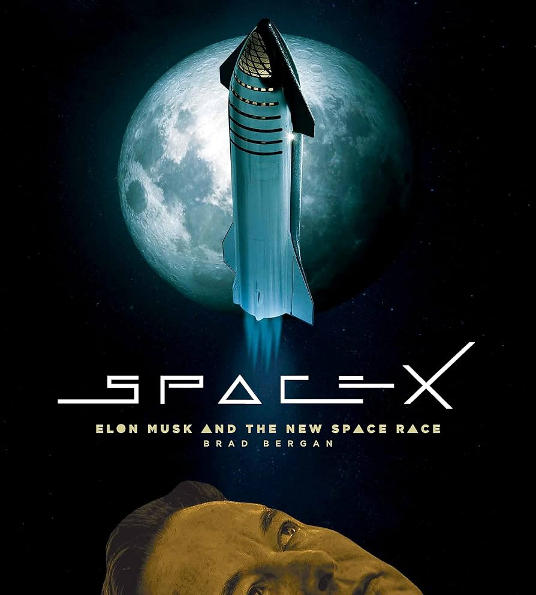

Página 2: Viajes Interplanetarios
Los viajes interplanetarios representan el siguiente gran paso para la humanidad, con misiones planeadas a Marte y más allá. Robots como Perseverance ya recolectan datos valiosos sobre la superficie marciana.
El desafío principal es la distancia: un viaje a Marte puede tomar meses, requiriendo avances en propulsión y sistemas de soporte vital para mantener a los astronautas seguros.
Empresas privadas están invirtiendo en cohetes reutilizables, haciendo que estos viajes sean más accesibles y sostenibles para futuras generaciones.



Detalles sobre la colonización potencial.